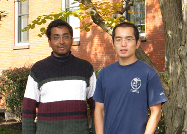

News Archives : 2009 : Determining Neural Connections using Light
by Sharad Ramanathan
November 30, 2009
|  (L to R) Sharad Ramanathan and Zengcai V Guo |
|
The nematode, C.elegans, with only 302 neurons, is an ideal system in which to understand how the dynamics of neural circuits to behavior. While the physical connectivity of the neurons in this nematode is known through EM reconstruction, we do not know which of these connections are excitatory and which inhibitory. Because of the small sizes of the neurons and a tough cuticle, electrophysiological recordings can be made from only one neuron at a time, precluding the possibility of any circuit level analysis of neural activity.
Using genetically encoded calcium sensors and light activated channels together with optics, we demonstrated the first fully genetically encoded light-based electrophysiology. We used a digital light processing mirror array to excite any specific neuron at will, while simultaneously measuring calcium activity (through the fluorescence change in the genetically encoded sensor, GCaMP) in multiple other neurons. Using this technique, for the first time, we could excite both a sensory neuron and an interneuron and monitor how activity propagates from these to downstream neurons, eventually leading to changes in locomotory behavior. We expect that our technique can be used to measure how activity propagates through neural circuits.
Read more in Nature Methods